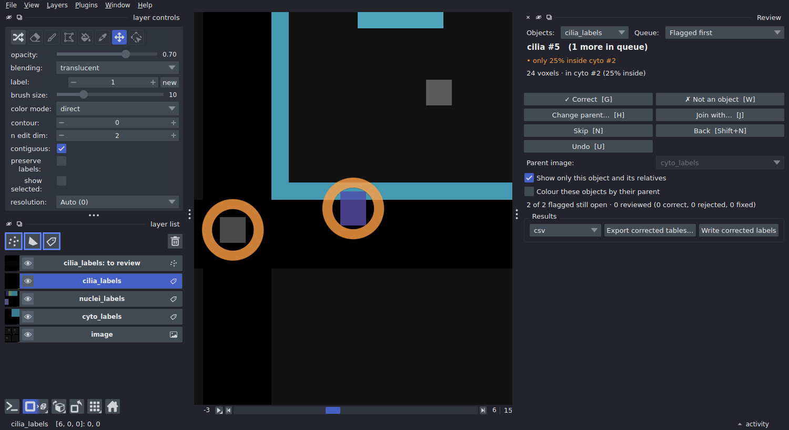
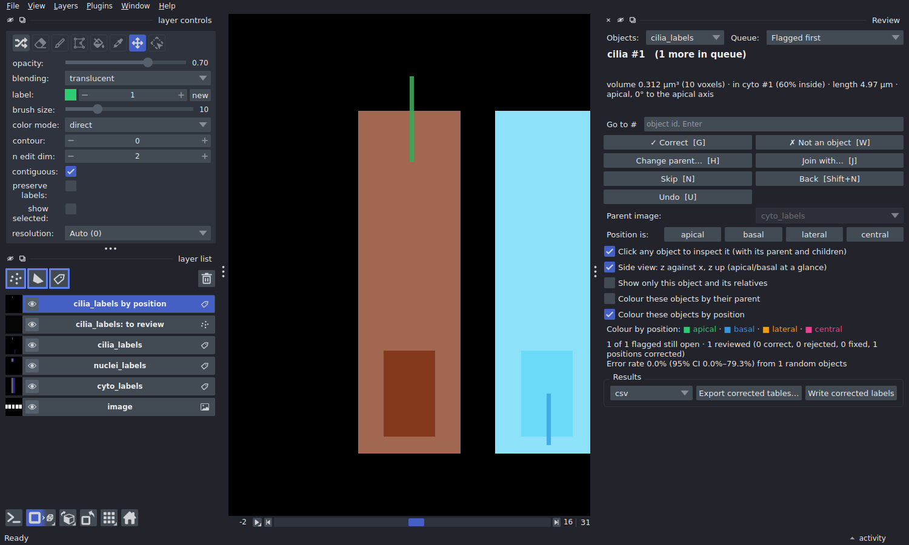

Reviewing and correcting results
A segmentation of a whole tissue has tens of thousands of objects, and some
of them are wrong. Scrolling through the volume hoping to spot them doesn't
work. patchworks review shows you the objects most likely to be wrong,
one at a time, and lets you fix each one with a single key. Your
corrections go straight into the result tables and workbooks, and no voxel
is rewritten unless you ask.
pip install "patchworks[napari]" # on the machine you review on
patchworks review results/image.zarr

A cilium only 25% inside its cell. The view jumps to it, shows it with its cell outlined, and hides everything else. Press G if it is right, H to give it the right cell, W if it isn't a cilium at all.
What gets flagged
Each object in the queue shows why it is there:
| Flag | Means | Typical cause |
|---|---|---|
| not inside any cell | the object overlaps no parent object | debris, a missed cell, a cilium on the lumen side |
| only 30% inside cell #88 | less than min_overlap of it is inside its parent |
wrong cell picked at a boundary, or a merge of two objects |
| 0 nuclei (expected 1) | a parent holds an unexpected number of children | a cell split in two, two cells merged, a missed nucleus |
| meets #412 exactly at a tile seam (z) | two objects touch face to face on a tile boundary | one object the tiling cut in two, or two neighbours; press J to join them |
| unusually large (6.2x the median) | the size is far from the rest (robust z-score > 3.5) | two objects merged, or a fragment |
| outside cell #12, 0.8 µm away | touches no parent, but one is within max_distance_um |
a cilium beside its cell (worth a look, lower priority) |
| position unclear: its cell has no nucleus to orient it | a position rule needs the nucleus, and the cell has none | a missed nucleus, or a cell cut by the image edge |
The most suspicious objects come first. "Children" and "parents" come from
the relations of a multi run (e.g. cilia_labels → cyto_labels); the size
and seam flags apply to every label image.
Expected counts are yours to state, since only you know that a cell has
one nucleus and zero to two cilia. Put them in multi.yaml, and the
workflow checks them before it starts and stores them with the results:
review:
expect:
cyto_labels:
nuclei_labels: 1 # exactly one
cilia_labels: [0, 2] # zero to two
min_overlap: 0.5 # or per pair: {cilia_labels: {cyto_labels: 0.3}}
Or pass them when you open the review:
patchworks review image.zarr --expect cyto_labels:nuclei_labels=1 cyto_labels:cilia_labels=0-2.
Deciding
| Key | Decision | Effect on the results |
|---|---|---|
| G | correct as it is | kept; marked ok |
| W | wrong: not a real object | dropped from every table and count |
| H, then click | belongs to another parent: click the right one (the background means "none") | its parent id changes; both parents' counts follow |
| J | join with the suggested object (a seam split) | the two become one object: sizes added, centroid and intensities weighted |
| Shift+J, then click | join with the object you click | same |
| N / Shift+N | skip / go back | nothing |
| U | undo the decision about this object | back to unreviewed |
Every decision is saved immediately, in the store, next to the object
table. Close napari whenever you like: the next patchworks review
continues where you stopped, and the queue leaves out what has been
decided. Corrections chain as you would expect. For example, joining two
halves of a cell moves the cilia of both halves to the joined cell.
Seeing what belongs to what
Outside the queue, you can look at any object:
- Click any object in the image: the panel switches to it and shows it with its parent (outlined) and its children. Click a cell to see its nuclei and cilia, a cilium to see its cell. A click reads the image at full resolution, and a thin object is hit even a couple of voxels off, so cilia are easy to pick.
- Go to #: type an object's id and press Enter.
- Hover over any object: napari's status bar shows its parent, its number of children, its position and its review status.
Options in the panel change the view:
- Show only this object and its relatives (on by default) hides everything else. Untick it to see the neighbourhood.
- Colour these objects by their parent adds a layer where every child has its parent's colour: all cilia of one cell share a colour, so an assignment error stands out as a different colour.
- Colour these objects by position colours each cilium by its class: apical, basal, lateral or central.
- Side view shows z against x, with z up, through the object. Apical and basal are then seen at a glance.
Orange rings mark the flagged objects still open. They stay visible in 3D, where napari's coarse 3D level hides small objects.
Where a cilium sits: apical, basal, lateral, central

Side view, coloured by position: an apical cilium (green) standing out of the top of its cell, the nucleus at the bottom; next door, a basal cilium (blue).
Each cilium is classified by the cell surface its base is nearest to:
| Class | The base is nearest to |
|---|---|
apical |
the top of the cell |
basal |
the bottom of the cell |
lateral |
the side wall |
central |
none of them: deeper than half-way from every surface |
"Top" needs an apical direction per cell. It can be a fixed direction:
+z if apical is up the stack, as for a monolayer imaged from below. Or it
can point away from the nucleus, for epithelia whose nuclei sit
basally; then each cell gets its own axis, whatever its tilt. The base of
a cilium is its end nearer the cell's centre, since a cilium grows out
from its base.
# multi.yaml
review:
position:
cilia_labels:
parent: cyto_labels
apical: nuclei_labels # away from the nucleus; or "+z", "-z", ...
central_depth: 0.5 # optional
Or when opening the review:
patchworks review image.zarr --position cilia_labels:cyto_labels=nuclei_labels.
The corrected tables get the class (position), where the base sits
(position_axial: -1 basal … +1 apical; position_radial: 0 on the axis …
1 at the side) and the cilium's angle to the apical axis
(angle_to_axis_deg: 0 along it, 90 across it). Each cell gets its counts
per class (n_cilia_labels_apical, …), as does the relation workbook.
The cell's shape comes from its moments, i.e. an equivalent cylinder, so
this is a classification, not a surface distance. It is reliable for
columnar and cuboidal cells, and less so for very irregular ones. Check it
the usual way: Colour these objects by position plus Side view. If
one is wrong, the Position is: buttons correct it. A correction counts
as a classification fix, not a segmentation error, so it does not enter
the error rate. A cell without a nucleus cannot be oriented; its cilia are
unknown and flagged.
Cilia next to their cell, not on it
A cilium can lie against its cell without overlapping it, and would then
count as belonging to no cell. With max_distance_um on a relation, such
an object gets the nearest cell within that distance. The distance is
exact, in µm, with anisotropic voxels taken into account, and is recorded
in cyto_labels_distance_um. These objects are flagged with a lower
priority ("outside cell #12, 0.8 µm away").
For an existing store:
patchworks tables image.zarr --relate cilia_labels:cyto_labels --max-distance 1.
How good is the segmentation?
Pick the queue Random sample (error rate) and review objects in the order it gives. The panel reports the fraction found wrong, with a 95% confidence interval, e.g. Error rate 3.0% (95% CI 1.0–8.5%) from 100 random objects. Stop when the interval is narrow enough for what you need. The estimate is unbiased because the order is random and fixed. Objects you already decided from the flagged queue count too: a decision about an object is true however it came up.
Using the corrections
The workbooks and tables are always read with the decisions applied:
- The relation workbooks of a multi run:
patchworks review image.zarr --workbooks results/writes every one (<child>_to_<parent>.xlsx) from the corrected tables, with aqccolumn (ok,fixed, or blank if not reviewed). Re-running the samerun_multicommand does it too: a workbook older than your decisions is rewritten, straight from the tables, without re-reading any labels. - Export the corrected tables, one file per label image, from the
panel or with
patchworks review image.zarr --export results/tables --format xlsx(orcsv,parquet). A csv loads straight into napari-chunked-regionprops ("Reload previous results"). - Write corrected labels (panel button, or
--write-labels nuclei_labels) writeslabels/nuclei_labels_reviewed, the label image with the decisions applied to the voxels. You only need this for figures, or for tools that read label images only.
patchworks review image.zarr --summary prints the counts and the error
estimate without opening napari.
Where the tables come from
Every label image the workflow writes gets an object table: one row per
object with its size (area_voxels, area_um3), centroid, bounding box,
its spread (cov_*, the second moments) and, for a multi run, the parent
it sits in (cyto_labels_id, cyto_labels_overlap). The corrected view
adds each object's shape from its spread: length_um (for a straight rod
the true length; shorter for a curved one), elongation (1 round, large
rod-like) and its main axis (axis_z, axis_y, axis_x). The table lives
inside the label group:
image.zarr/labels/cilia_labels/
0/ 1/ 2/ … the label pyramid
table/ the object table (one zarr array per column)
So it travels with the labels, including in a zip bundle, and it is
replaced whenever the labels are. A table computed from older labels is
recognised and ignored, never shown against the wrong segmentation.
Measuring costs one read of the labels, after the merge. Add intensity
columns with table_channels: [0, 2], or turn tables off with
object_table: false (see the workflow config).
For a store that has none, for example a run made before tables existed, or labels from elsewhere:
In Python:
from patchworks import Review, read_table
cells = read_table("image.zarr/labels/cyto_labels") # pandas, as computed
rv = Review("image.zarr", expect={"cyto_labels": {"nuclei_labels": 1}})
rv.flags("cyto_labels")[:5] # the worst five
rv.decide("nuclei_labels", 17, "wrong")
rv.effective("cyto_labels") # with corrections
Where to review
On any machine with a screen and napari, reading the store the cluster wrote:
- Copy the store to your computer (tables and decisions live in it), or open it on a mounted cluster filesystem. napari reads only what is on screen, so a network mount works.
- The store must be writable, since that is where the decisions are
saved. A
.zipbundle is read-only, so unzip it first. - The decisions are small. If you reviewed a copy,
--workbooksand--exportwork on that copy directly; there is no need to copy anything back.